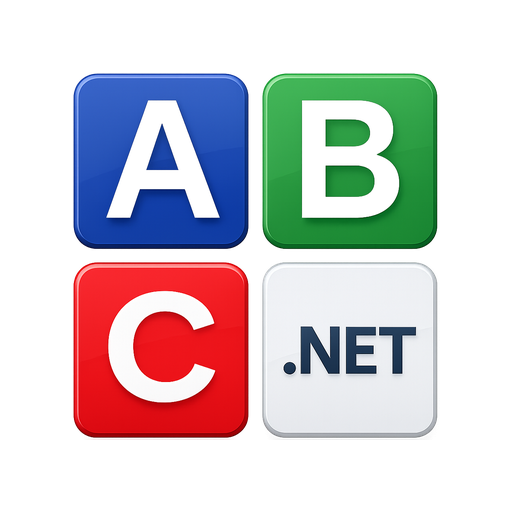

Результаты обновления сайта
Главная страница, примеры кода, позиционирование языка, загрузки и визуальная идентичность
Обновление охватило весь основной путь пользователя
02Сайт стал точнее объяснять, что такое PascalABC.NET, быстрее подводить к примерам и загрузке, а на мобильных экранах сохранять читаемый ритм.
- Главная и мобильная компоновка
- 17 тематических страниц примеров
- Русская и английская версии About
- Загрузка 4.0 и предварительная 4.0.1
- Иконки, favicon, robots.txt и Sitemap
Раздел примеров превратился в самостоятельную базу материалов
03Основы, условия, циклы, строки, коллекции, функции, последовательности, файлы и регулярные выражения
Главная стала компактнее на мобильных без изменений десктопного текста
04Проблема
Первый экран занимал слишком много места
Длинный вводный текст, крупные табы и неодинаковые интервалы отодвигали примеры и основные ссылки вниз.
Результат
Содержание видно раньше
Мобильный вариант абзаца сокращён, интервалы выровнены, табы уплотнены, а кнопки сохранили исходный размер шрифта.
About теперь описывает язык спокойно и точно
05PascalABC.NET продолжает традиции Pascal и развивается как самостоятельный современный универсальный язык для платформы .NET.
Русская версия сохраняет связь с происхождением проекта. Английская версия убирает локальные российские реалии и не преувеличивает роль научных исследований. Формулировка «учебный язык» не используется.
Страница загрузки разделяет стабильную и предварительную версии
065 сентября 2026 года
Компактная карточка без лишних повторов
Две текстовые ссылки ведут на StandardPack и консольный компилятор для .NET 10. Ссылка «Что нового в 4.0.1» остаётся обычной, нежирной.
Первая страница изменений
Описана функция Copy для стандартных обобщённых коллекций и различие между копированием контейнера и присваиванием ссылки.
Иконки приведены к единому визуальному масштабу
07Обновлены иконки карточек на Главной и полный набор favicon для браузеров, мобильных устройств и Windows.
Малые favicon используют максимум доступной площади. Размеры от 120 px получили безопасное поле для круглой обрезки. Между плитками сохранена прозрачность, края сглажены, белая кайма удалена.

Технические сигналы сайта согласованы
08Сайт отдаёт корректные форматы и больше не приглашает поисковых роботов в удалённый локальный раздел Wiki.
Основная работа завершена, осталась проверка после публикации
09Ближайшая проверка
- Пересобрать и опубликовать сайт.
- Удалить старый ярлык Windows.
- Перезапустить Firefox и создать ярлык заново.
- При повторной белой иконке проверить локальный Firefox shortcutCache.